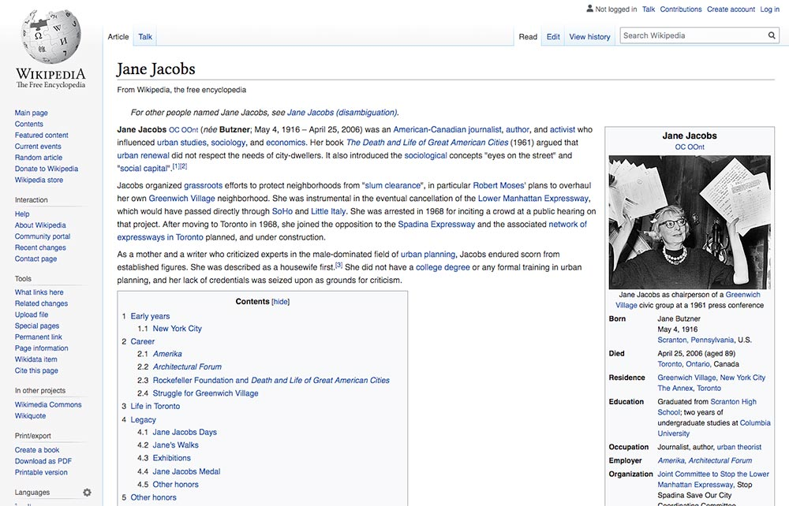

Project Background
In late 2017, I had left a design agency where I primarily focused on information architecture. I wanted to push past the black and white world of wireframes and tackle a fun visual redesign exercise. What better place to start than the internet's free encyclopedia?!
When analyzing a Wikipedia article, it's difficult to be objective (given that we've all used Wikipedia numerous times). However, the first thing that comes to mind is organized chaos. You can find all the information at your fingertips but with the number of links and possible paths to go down, it's easy to get lost in a Wiki wormhole. I wondered if there was a way to better direct users to related people/things so they could dive deeper in learning about a specific topic. In addition, I saw a number of quick wins that would help improve legibility and liven up the page from its stripped-down appearance.
As with any design exercise, I want to strongly emphasize that the requirements and constraints of this project are IMAGINARY and idealized. The reality of product design is much messier and complex than my hypothetical wireframes and mockups here could ever demonstrate. Please keep this in mind as you read through and weigh my take on a Wiki article. No users or clients were harmed in this redesign :)
